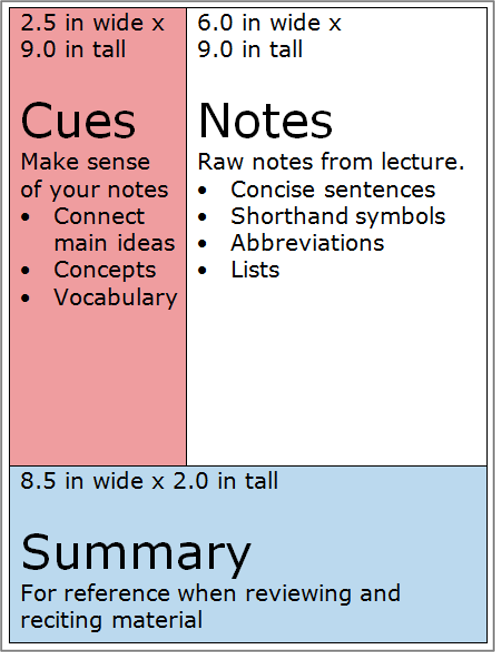

Developed half a century ago, this method uses two top columns, a notes column (right) and a keywords/comments column (left), combined with a summary section (bottom) to organize your note taking.
The Cornell note-taking method can be used for most subjects, as it's both simple and effective for taking notes. It is also a very good way of preparing for exams, as you summarize what you learn into your own words.